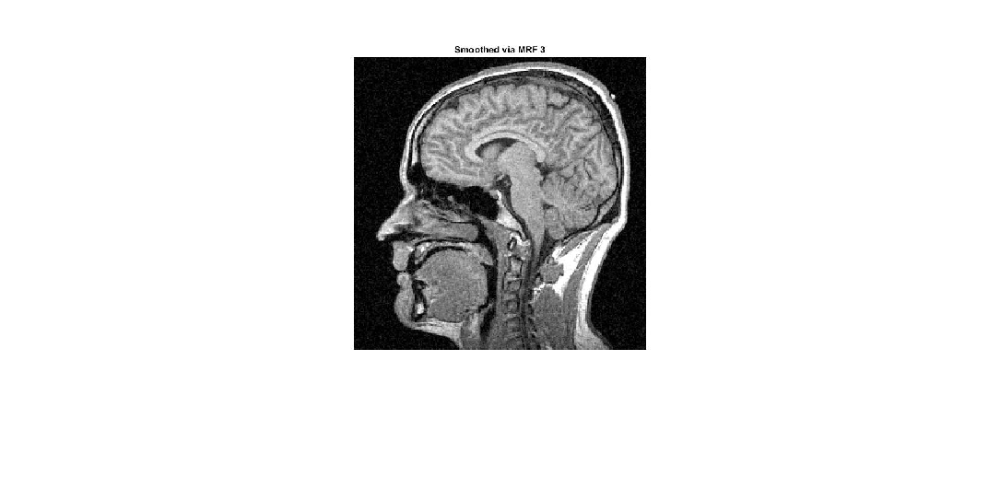
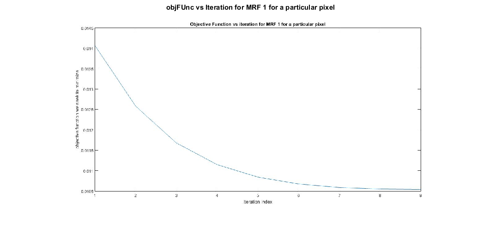
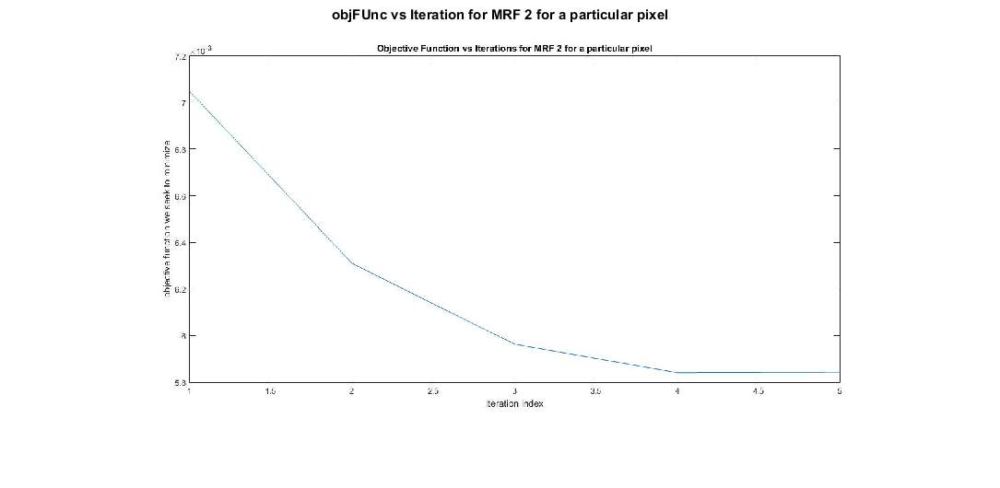

Contents
im1=imread('Noisy.jpg');
im2=imread('Smoothed via MRF 1.jpg');
im3=imread('Smoothed via MRF2.jpg');
im4=imread('Smoothed via MRF3.jpg');
im5=imread('1_objFunc vs Iter.jpg');
im6=imread('2_ObjFUnc vs Iter.jpg');
im7=imread('3_objFUnc vs iter.jpg');
Q2 part b
imshow(im1);
figure
imshow(im2);
figure
imshow(im3);
figure
imshow(im4);
Warning: Image is too big to fit on screen; displaying at 67%
Warning: Image is too big to fit on screen; displaying at 67%
Warning: Image is too big to fit on screen; displaying at 67%
Warning: Image is too big to fit on screen; displaying at 67%


Q2 part c
figure,imshow(im5)
title('objFUnc vs Iteration for MRF 1 for a particular pixel')
figure,imshow(im6)
title('objFUnc vs Iteration for MRF 2 for a particular pixel')
figure,imshow(im7)
title('objFUnc vs Iteration for MRF 3 for a particular pixel')
Warning: Image is too big to fit on screen; displaying at 67%
Warning: Image is too big to fit on screen; displaying at 67%
Warning: Image is too big to fit on screen; displaying at 67%
 